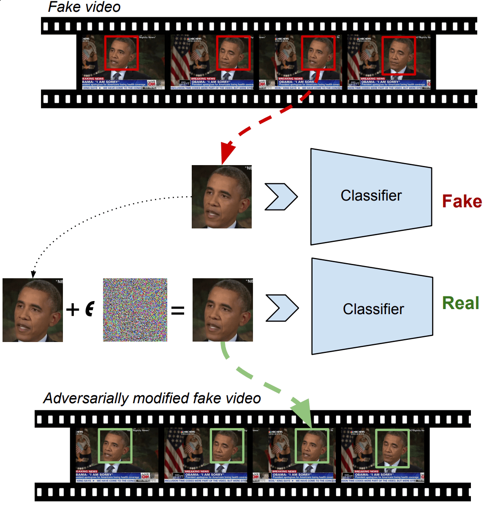

| Deepfake detector (XceptionNet) on Fake Video | Deepfake detector (XceptionNet) on Adversarial Fake Video |
Deep neural network based face recognition models have been shown to be vulnerable to adversarial examples. However, many of the past attacks require the adversary to solve an input-dependent optimization problem using gradient descent which makes the attack impractical in real-time. These adversarial examples are also tightly coupled to the attacked model and aren't as successful in transferring to different models. In this work, we propose a real-time, highly-transferable attack on face recognition models based on Adversarial Transformation Networks (ATNs). We find that the white-box attack success rate of a pure U-Net ATN falls substantially short of gradient-based attacks like PGD on large face recognition datasets. We therefore propose a new architecture for ATNs that closes this gap while maintaining a 10000 times speedup over PGD. Furthermore, we find that at a given perturbation magnitude, our ATN adversarial perturbations are more effective in transferring to new facial recognition models than PGD. ReFace attacks can successfully deceive commercial face recognition services in a transfer attack setting and reduce face identification accuracy from 82% to 16.4% for AWS SearchFaces API and Azure face verification accuracy from 91% to 50.1%.
|
|
 |
| Fake (From dataset) | White-box | Robust White-box |
| Fake (From dataset) | Black-box | Robust Black-box |